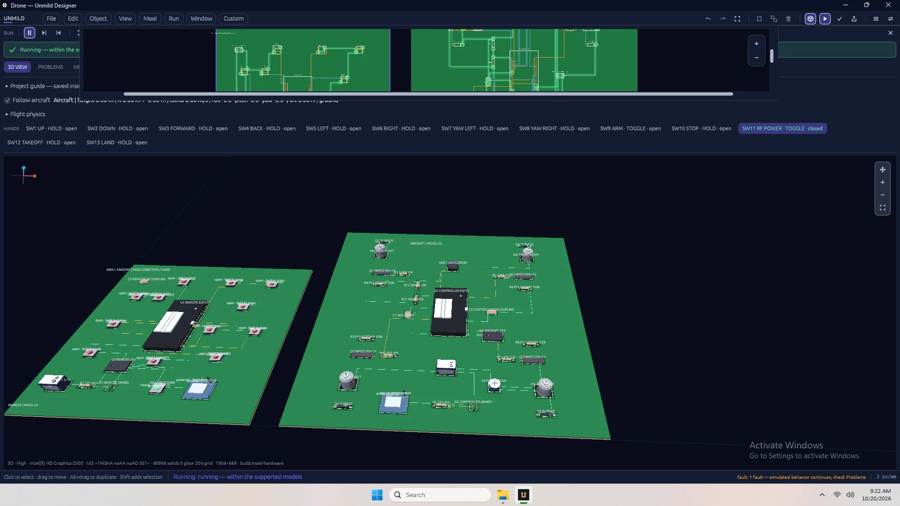
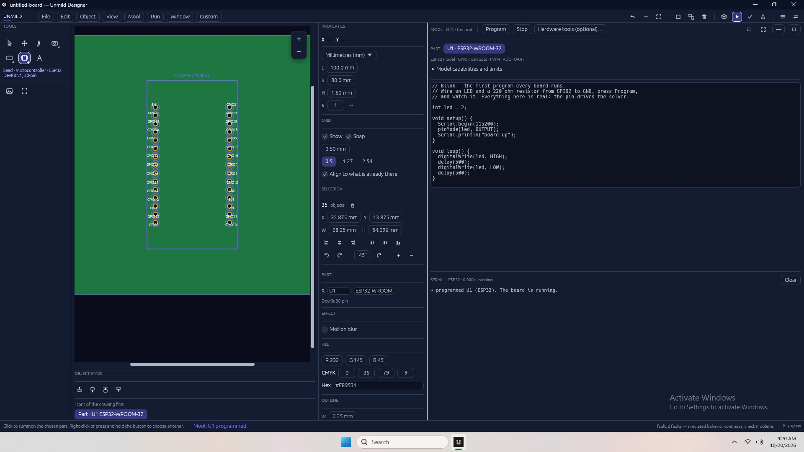
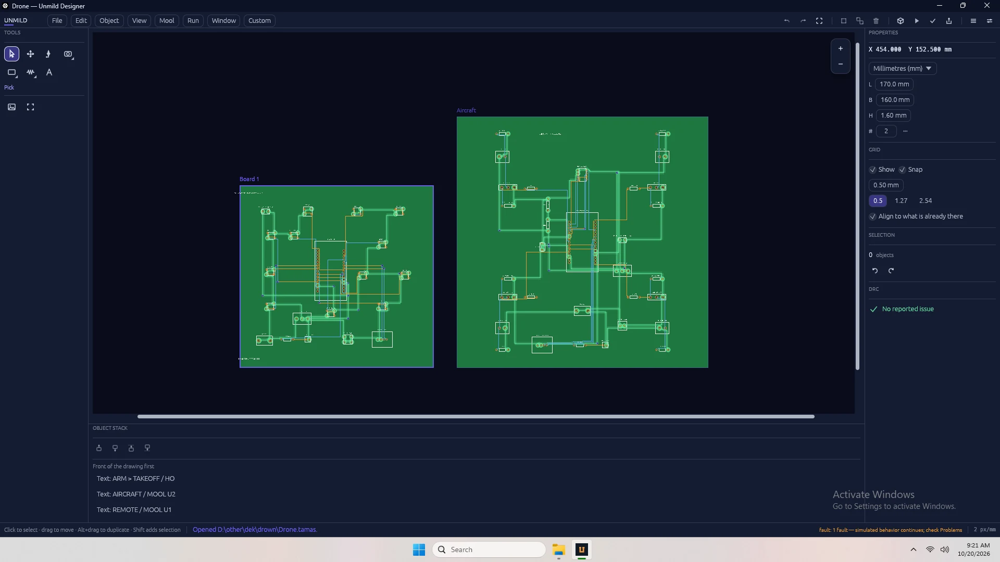
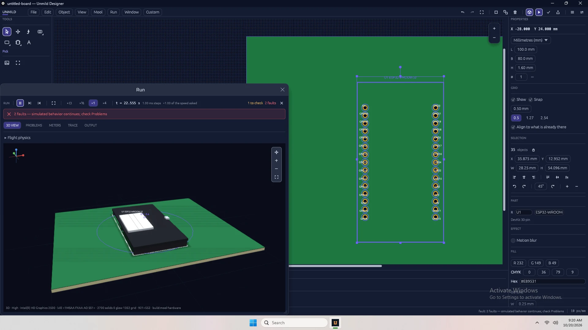

Think beyond the canvas
A bench for the next decision.
Explore schematic views, circuit analysis and design checks alongside the layout. Keep the questions close to the work.
Schematic & ERCDC / AC / transient analysisPCB checks
Turn a circuit idea into a board you can explore. Design the layout, program supported microcontrollers with Mool, follow the behavior in Live 3D, and prepare your manufacturing files—all in one Windows workspace.
Available through the Microsoft Store · Windows

01 / The workspace
Move between copper, code and circuit behavior without losing sight of the board you’re making.

Mool / Where behavior begins
Write C/Arduino-style programs for supported ESP32 and STM32 parts. Press Program, then watch inputs, outputs and the connected circuit respond.
Live 3D / More than a still view
Review the board in three dimensions while Run brings supported components to life. Follow LEDs, motors, controls and electrical readings in context.

Board layout / Direct by design
Find parts with Saad, connect them with Setu, and shape the layout on a precise canvas. Keep multiple boards together when your idea needs more than one.

Personal workspace / Your rhythm
Float or dock panels. Tune colors, shortcuts, zoom and pan. Save the working environment that feels natural to you and return to it next time.
Think beyond the canvas
Explore schematic views, circuit analysis and design checks alongside the layout. Keep the questions close to the work.
Keep what you make
Save the board and its Mool programs in a .tamas project. When it’s time to hand over the design, export a clearly organized build folder.
02 / How it connects
The layout gives the circuit its shape. Mool gives supported parts their behavior. Review and export bring that work into view.
Create
Place components, connect the circuit and write the programs that drive it.
The shared foundation
Board data, Mool programs and project context stay together in a TAMAS file.
Review + release
Inspect in Live 3D, review checks and generate manufacturing and review files.
03 / Your first project
A straightforward path from opening Designer to finding your exported files.
Launch Unmild Designer and choose New project from the start screen.
Select a folder, name your project and choose the board options. Click Create project.
Place and connect parts. Add Mool behavior where you need it, explore Live 3D and review the design checks.
Export the project, then open its folder. Your manufacturing and review files are in the build folder.
Organized for review and handoff. Check the release notes and your manufacturer’s requirements before ordering.
.tamas file.View project setup 04 / Good to know
Design PCB layouts, arrange multiple boards, write supported microcontroller programs in Mool, explore behavior in Live 3D, review design checks and export manufacturing files. It’s one desktop workspace for the board and what it does.
Mool runs a supported C/Arduino-style subset for ESP32 and STM32 models against the connected circuit. Choose a part, write or load an example and press Program. Programs and drafts are saved with the board. Running a sketch in Mool does not require an external compiler.
The board and its placed components in three dimensions, with live behavior for supported parts during Run. See LEDs respond, motors turn and controls affect the circuit while following readings and reported issues.
Core design, local project saving, Mool and exports work on your computer without a Designer account or AI API key. Downloading the app, Store services, external links and contacting support use the internet.
Your project lives in the folder you select. The editable board uses the .tamas format, and File → Export PCB package writes output to a build folder within the project. Keep the project folder backed up.
Yes. Customize colors, tool shortcuts, zoom and pan behavior, and arrange floating or docked panels. Designer saves your local preferences for the next session.
Visit Unmild Designer on the Microsoft Store for current pricing, availability and installation details. For a product or purchase question, contact UNMILD.
Designer is UNMILD’s dedicated electronics design product. It has its own workspace and purpose, alongside the other tools at unmild.store.
05 / A direct line to UNMILD
Installation help, a question about your workflow, or something you’d like to see next. Tell us what you’re working on.
unmildsupport@gmail.comFor technical help, include your app version, Windows version and steps to reproduce the issue. Remove private information from attachments.
Your next board starts in Unmild Designer.